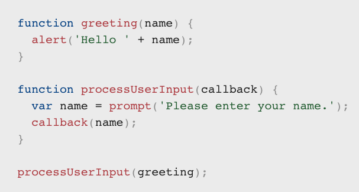

Good reading this week, functions was the most interesting this week
Callbacks: functions can be pass as a parameter to another function
A callback function is a function passed into another function as an argument, which is then invoked inside
the outer function to complete some kind of routine or action.
Example of callback:

An arrow function expression is a compact alternative to a traditional function expression, but is limited and
can't be used in all situations.